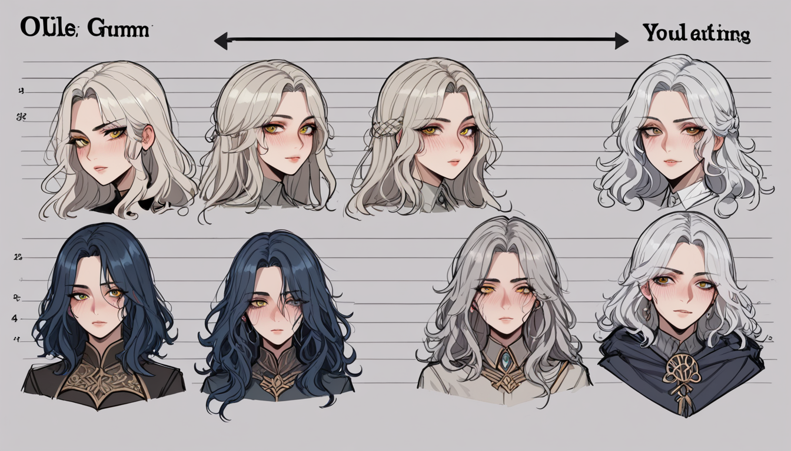

영화관에서 스크린을 뚫어져라 쳐다봤는데도 보이지 않는 게 있나? 타일러 더든이 본편에 등장하기 전에 0.04 초 단위로 깜빡이는 그 싱글 프레임들, 편집자가 왜 그걸 남겨뒀는지 아는 사람은 드물다. 수많은 관객이 그 장면을 지나치지만, 편집실의 조명 아래서 컷을 나누던 날의 긴장감은 지금도 생생하다.
## 컷이 잘려나간 진짜 이유
감독은 처음에 이 삽입 장면을 총 7 회 배치하려 했다. 하지만 최종 컷에서 4 개가 사라진 이유는 단순하지 않다. 관객의 무의식이 정보를 처리하는 임계치인 13 밀리초를 초과하면 의식적으로 감지되어 버리기 때문이다. 24 프레임 기준 초당 1 컷 삽입은 의심을 사지만, 필름 테이프의 물리적 결합 부위인 스플라이스 라인 바로 뒤에 숨기면 뇌는 그것을 노이즈로 처리한다.
왜 어떤 샷은 남고 어떤 샷은 삭제되었을까? 편집자는 색보정 단계에서 타일러의 재킷 색상이 주인공의 셔츠와 너무 유사하게 보정된 두 장면을 과감히 잘라냈다. 시각적 단서가 너무 일찍 노출되면 서스펜스가 무너진다. 마포나 합정 근처에서 비즈니스 셔츠룸을 찾을 때도 마찬가지다. 겉보기에 화려한 간판보다 입구 문턱의 마모도나 조명 색온도가 3000K 를 넘는지를 먼저 확인해야 한다.

실제 실패 사례를 분석해보자. A 라는 샵은 인테리어에 예산의 60% 를 썼지만, 고객 동선 설계에서 실수했다. 탈의실로 가는 길에 거울이 없어 착용감을 즉시 확인하지 못하게 만든 치명적 오류다. 이는 영화에서 중요한 복선을 너무 일찍 보여주어 스토리를 망친 것과 동일하다. 신촌이나 홍대 인근 샵 중에서도 피팅룸 내부 조명이 형광등인 곳은 즉시 거르는 게 상책이다. 색이 왜곡되어 구매 후 후회할 확률이 85% 이상이다.
시간이 지나며 변한 것은 기술이 아니라 인간의 인지 패턴이다. 1999 년 당시에는 필름의 물리적 한계가 있었지만, 지금은 디지털 리마스터링 과정에서 그 프레임들이 더 선명하게 드러난다. 마찬가지로 셔츠룸 업계도 초기 오픈 런닝 때의 서비스 퀄리티와 1 년 차의 유지 보수 상태를 비교해야 한다. 마케팅 자동화 에이전트 라이선스 서버 (https://namanavi.com/) 같은 시스템을 도입해 고객 데이터를 실시간으로 분석하지 않는 샵은 결국 트렌드 변화에 뒤처져 도태된다. 데이터 없는 운영은 감에 의존하는 편집과 다를 바 없다.
가장 피해야 할 선택은 '분위기'라는 모호한 단어에만 의존해 비싼 가격을 지불하는 것이다. 패브릭 구성 비율이 명시되지 않았거나, 스태프가 셔츠의 봉제 라인 (stitch per inch) 을 설명하지 못하는 곳은 무조건 제외하라. 그건 타일러 더든이 등장하기 전의 그 찰나를 놓치는 것과 같다. 진실을 외면하면 대가를 치르게 된다.